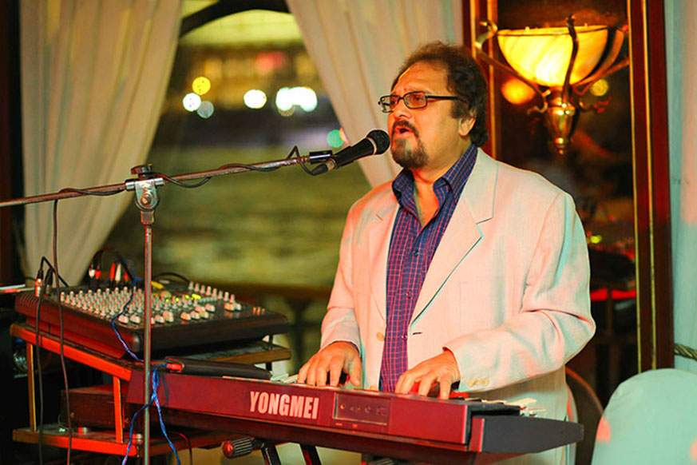
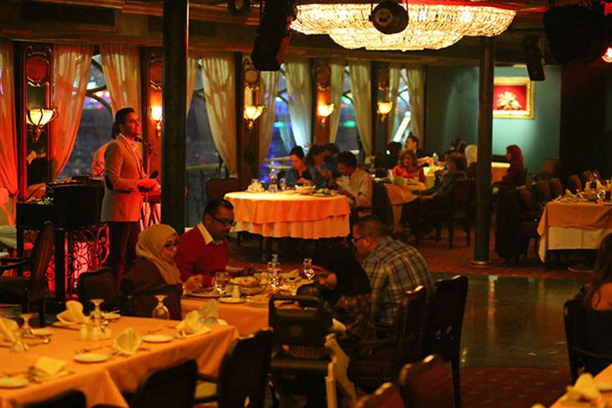
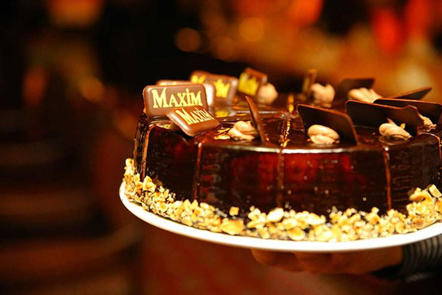
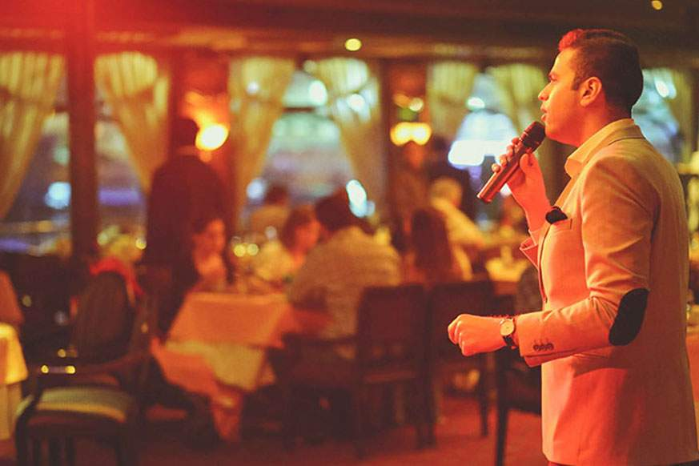
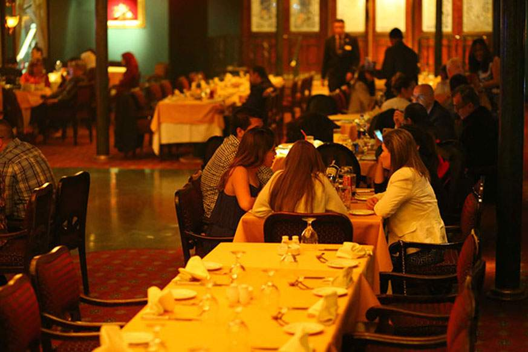

About this activity
Classic Nile dinner cruise with live entertainment and scenic views of Cairo’s skyline.
Cairo, Egypt





Classic Nile dinner cruise with live entertainment and scenic views of Cairo’s skyline.